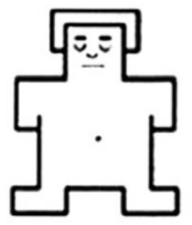
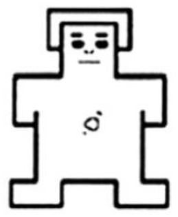
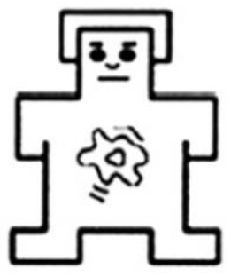
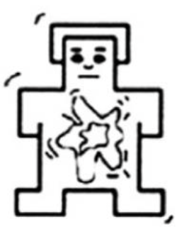
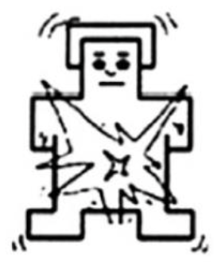

<!DOCTYPE html>
<html>
    <head>
        <title> Experiment on Mood-Creativity Linkage </title>
        <!-- Load jsPsych library -->
        <script src="jspsych/jspsych.js"></script>
        <!-- Load jsPsych's standard CSS file -->
        <link href="jspsych/jspsych.css" rel="stylesheet">
        <!-- Load jsPsych plugin for full-screen display -->
        <script src="jspsych/plugin-fullscreen.js"></script>
        <!-- Load jsPsych plugin for HTML button response -->
        <script src="jspsych/plugin-html-button-response.js"></script>
        <!-- Load jsPsych plugin that preloads experiment stimuli -->
        <script src="jspsych/plugin-preload.js"></script>
        <!-- Load jsPsych plugin for an interactive canvas that the participant can draw on using their mouse or touchscreen -->
        <script src="jspsych/plugin-sketchpad.js"></script>
        <!-- Load jsPsych plugin for displaying a set of <inputs> from a HTML string -->
        <script src="jspsych/plugin-survey-html-form.js"></script>
        <!-- Load jsPsych plugin for likert-scale questionnaires -->
        <script src="jspsych/plugin-survey-likert.js"></script>
        <!-- Load jsPsych plugin for multiple-choice questions -->
        <script src="jspsych/plugin-survey-multi-choice.js"></script>
        <!-- Load jsPsych plugin for HTML keyboard response -->
        <script src="jspsych/plugin-survey-text.js"></script>
        <!-- Load jsPsych plugin for video keyboard response -->
        <script src="jspsych/plugin-video-keyboard-response.js"></script>
    </head>
    <body></body>
    <script>
        // Initialize jsPsych experiment with the defined timeline
        var timeline = [];
        
        // Randomly assign participants to the three mood induction conditions (with equal probablities)
        var filmClips = [
            'videos/positive_valence_high_arousal.mp4',
            'videos/positive_valence_low_arousal.mp4',
            'videos/neutral.mp4'
        ];

        // Define a function to sample the three film clips with equal probability
        // Don't know why the jsPsych.randomization.sampleWithReplacement does not work
        function sample_film(arr, size) {
            const samp = [];
            for (let i = 0; i < size; i++) {
                const rndIndex = Math.floor(Math.random() * arr.length);
                samp.push(arr[rndIndex]);
            }
            return samp;
        }

        var selected_clip = sample_film(filmClips, 1);

        // Preload stimuli to speed up stimuli displaying and playing
        var preload = {
            type: jsPsychPreload,
            // auto_preload: true, // automatically find stimuli to preload based the main experiment timeline
            images: ['images/SAM_Arousal_1.png', 'images/SAM_Arousal_2.png',
                    'images/SAM_Arousal_3.png', 'images/SAM_Arousal_4.png',
                    'images/SAM_Arousal_5.png', 'images/SAM_Arousal_6.png',
                    'images/SAM_Arousal_7.png', 'images/SAM_Arousal_8.png', 
                    'images/SAM_Arousal_9.png', 'images/SAM_Valence_-1.png',
                    'images/SAM_Valence_-2.png', 'images/SAM_Valence_-3.png',
                    'images/SAM_Valence_-4.png', 'images/SAM_Valence_0.png',
                    'images/SAM_Valence_1.png', 'images/SAM_Valence_2.png',
                    'images/SAM_Valence_3.png', 'images/SAM_Valence_4.png',
                    'images/Incomplete_Shape_1.png', 'images/Incomplete_Shape_2.png'
                ],
            video: [selected_clip], 
            message: 'Please be patient as the experiment stimuli load and do not refresh the page.'
        }
        timeline.push(preload);

        // Introduce the overall study
        var introduction = {
        type: jsPsychFullscreen,
        message: `
            <strong>Welcome!</strong></p>
            Thank you for choosing to participate in this study!
            This study will take approximately 10 to 15 minutes.</p>
            You will receive $7.50/hour compensation for your participation in this study.</p>
            The study consists of multiple parts. Please read the instructions for each part carefully.</p>
            <p><strong>Press "Continue" to enter full-screen mode to begin the study.</strong></p>
            `,
        fullscreen_mode: true
        };
        timeline.push(introduction);

        // Instructions for watching the film clip
        var video_part_instruction = {
            type: jsPsychHtmlButtonResponse,
            stimulus: `
            <p> <strong style="font-size: 30px;">Instructions for Wactching the Clip</strong></p>
            <ul style="text-align:left;">
                <li> You will now watch a video clip that lasts approximately 2 to 3 minutes.</li>
                <li> You do not need to memorize any details from the clips you will be watching.</li>
                <li> Just immerse yourself in the clip as you would when watching a movie in a cinema. </li>
                <li> <strong>Press "Continue" to move on to the task.</strong></li>
            </ul>
            `,
            choices: ['Continue']
        };
        timeline.push(video_part_instruction)
        
        // Stream the movie used for mood induction
        var video = {
            type: jsPsychVideoKeyboardResponse,
            stimulus: selected_clip,
            height: 1000,
            width: 1000,
            trial_ends_after_video: true,
            autoplay: true
        };
        timeline.push(video);

        // Check mood induction (arousal and valence)
        var SAM_intro = {
        type: jsPsychHtmlButtonResponse,
        stimulus: `
            <p style="text-align:left;"> You will now complete a two-question survey based on the previous video.</p>
            <p style="text-align:left;"> <strong>Press "Continue" to move on to the task.</strong></p>
            `,
        choices: ['Continue']
        }
        timeline.push(SAM_intro);

        // Add a comprehension check to ensure participants understand that they need to reflect on their feelings immediately after watching the clip, and rate their current level of arousal and valence accordingly.
        var SAM_instruction_check = {
            type: jsPsychSurveyMultiChoice,
            questions: [
                {
                    prompt: "What should you consider when rating your mood?",
                    options: ["How you feel right now after the clip", "Memories of past events", "Random feelings"],
                    correct_response: "How you feel right now after the clip",
                    required: true
                }
            ],
            on_finish: function(data){
                if(data.response["Q0"] !== "How you feel right now after the clip"){
                    alert("Please focus on how you feel immediately after watching the clip when rating your mood.");
                }
            }
        };
        timeline.push(SAM_instruction_check);

        var SAM_main = {
        type: jsPsychSurveyHtmlForm,
        preamble: '<p style="text-align:left;"> Rate how you feel about the clip you just watched. </p>',
        html: '<p style="text-align:left;"> <b>Please rate how positively or negatively you feel after watching the clip.</b> </p>\
        <div style="display:flex; justify-content: space-between;">\
            <label style="display:flex; flex-direction:column; align-items:center;">\
            <input name="valence" type="radio" value="-4" required/>\
            \
            </label>\
            <label style="display:flex; flex-direction:column; align-items:center;">\
            <input name="valence" type="radio" value="-3" required/>\
            \
            </label>\
            <label style="display:flex; flex-direction:column; align-items:center;">\
            <input name="valence" type="radio" value="-2" required/>\
            \
            </label>\
            <label style="display:flex; flex-direction:column; align-items:center;">\
            <input name="valence" type="radio" value="-1" required/>\
            \
            </label>\
            <label style="display:flex; flex-direction:column; align-items:center;">\
            <input name="valence" type="radio" value="0" required/>\
            \
            </label>\
            <label style="display:flex; flex-direction:column; align-items:center;">\
            <input name="valence" type="radio" value="1" required/>\
            \
            </label>\
            <label style="display:flex; flex-direction:column; align-items:center;">\
            <input name="valence" type="radio" value="2" required/>\
            \
            </label>\
            <label style="display:flex; flex-direction:column; align-items:center;">\
            <input name="valence" type="radio" value="3" required/>\
            \
            </label>\
            <label style="display:flex; flex-direction:column; align-items:center;">\
            <input name="valence" type="radio" value="4" required/>\
            \
            </label>\
        </div>\
        <p style="text-align:left;"> <b>Please rate how intensely you feel after watching the clip.</b> </p>\
        <div style="display:flex; justify-content: space-between;">\
            <label style="display:flex; flex-direction:column; align-items:center;">\
            <input name="arousal" type="radio" value="1" required/>\
            \
            </label>\
            <label style="display:flex; flex-direction:column; align-items:center;">\
            <input name="arousal" type="radio" value="2" required/>\
            \
            </label>\
            <label style="display:flex; flex-direction:column; align-items:center;">\
            <input name="arousal" type="radio" value="3" required/>\
            \
            </label>\
            <label style="display:flex; flex-direction:column; align-items:center;">\
            <input name="arousal" type="radio" value="4" required/>\
            \
            </label>\
            <label style="display:flex; flex-direction:column; align-items:center;">\
            <input name="arousal" type="radio" value="5" required/>\
            \
            </label>\
            <label style="display:flex; flex-direction:column; align-items:center;">\
            <input name="arousal" type="radio" value="6" required/>\
            \
            </label>\
            <label style="display:flex; flex-direction:column; align-items:center;">\
            <input name="arousal" type="radio" value="7" required/>\
            \
            </label>\
            <label style="display:flex; flex-direction:column; align-items:center;">\
            <input name="arousal" type="radio" value="8" required/>\
            \
            </label>\
            <label style="display:flex; flex-direction:column; align-items:center;">\
            <input name="arousal" type="radio" value="9" required/>\
            \
            </label>\
        </div>\
        <p>'
        };
        timeline.push(SAM_main);

        // Instructions for the incompletness drawing task
        var drawing_part_instruction = {
            type: jsPsychHtmlButtonResponse,
            stimulus: `
            <p><strong style="font-size: 30px;">Instructions for the Drawing Task</strong></p>
            <ul style="text-align:left;">
                <li>You will now complete an incomplete drawing.</li>
                <li>Use your imagination to finish the drawing in any way you like.</li>
                <li>Take your time and be as creative as possible.</li>
                <li>You are allowed to <em>redo</em>, <em>undo</em>, and <em>clear</em> your drawing before submitting the final product.</li>
                <li>After finishing, you will be asked to label and describe your drawing.</li>
                <li><strong>Press "Continue" to start the drawing task.</strong></li>
            </ul>
            `,
            choices: ['Continue']
        };
        timeline.push(drawing_part_instruction);
        
        // Complete the incompleteness shape task
        // Utility function to shuffle an array
        function shuffleArray(array) {
            for (let i = array.length - 1; i > 0; i--) {
                const j = Math.floor(Math.random() * (i + 1));
                [array[i], array[j]] = [array[j], array[i]];
            }
            return array;
        }

        // Define three groups of shapes
        const group1 = ['images/Incomplete_Shape_Group_1_A.png', 'images/Incomplete_Shape_Group_1_B.png', 'images/Incomplete_Shape_Group_1_C.png'];
        const group2 = ['images/Incomplete_Shape_Group_2_A.png', 'images/Incomplete_Shape_Group_2_B.png', 'images/Incomplete_Shape_Group_2_C.png'];
        const group3 = ['images/Incomplete_Shape_Group_3_A.png', 'images/Incomplete_Shape_Group_3_B.png', 'images/Incomplete_Shape_Group_3_C.png'];

        // Shuffle groups and select one shape from each
        const selectedShapes = [
            shuffleArray(group1)[0],
            shuffleArray(group2)[0],
            shuffleArray(group3)[0]
        ];

        // Randomize the order of presenting the selected shapes
        shuffleArray(selectedShapes);

        // Function to create a drawing task
        function createDrawingTask(backgroundImage) {
            const drawing = {
                type: jsPsychSketchpad,
                canvas_width: 500,
                canvas_height: 500,
                background_image: backgroundImage,
                prompt: '<p>Complete the incomplete drawing below. Use your imagination and take your time. </p>',
                prompt_location: 'abovecanvas',
            };

            const drawing_label = {
                type: jsPsychSurveyText,
                preamble: () => {
                    const imageData = jsPsych.data.get().last(1).values()[0].png;
                    return `</img>`;
                },
                questions: [{ prompt: `What label would you give for your drawing?`, required: true }]
            };

            const drawing_narrative = {
                type: jsPsychSurveyText,
                questions: [
                    {
                        prompt: `Please describe how you approached the incomplete shape and developed your drawing step-by-step. Start with your initial thoughts: What first came to mind when you saw the shape? Did it remind you of anything specific, or did you consider multiple ideas before deciding on one? If your idea evolved during the process, explain what triggered the change. Think about the theme or category your drawing fits, such as nature, technology, people, animals, or abstract concepts. Did new themes emerge as you worked, and how did you decide which direction to follow? Please be as detailed as possible.`,
                        rows: 6,
                        columns: 40,
                        name: `narrative_response`,
                        required: true
                    }
                ],
                preamble: () => {
                    const imageData = jsPsych.data.get().last(2).values()[0].png;
                    return `</img>`;
                },
                button_label: "Submit Response"
            };

            return [drawing, drawing_label, drawing_narrative];
        }

        // Push tasks dynamically based on selected shapes
        selectedShapes.forEach(shape => {
            timeline.push(...createDrawingTask(shape));
        });
        
        // Control variables
        // Ask participants to complete some questionnaires
        var control_part_instruction = {
        type: jsPsychHtmlButtonResponse,
        stimulus: `
        <p><strong style="font-size: 30px;">Instructions for Filling out Questionnaires</strong></p>
        <ul style="text-align:left;">
        <li>You will now be asked to complete several questionnaires.</li>
        <li>Please read each statement carefully and choose the option that best represents your feelings or agreement.</li>
        <li><strong>Press "Continue" to begin the questionnaires.</strong></li>
        </ul>
        `,
        choices: ['Continue']
        };
        timeline.push(control_part_instruction);

        // Control variable 1: Trait affectivity (measurede by PANAS)
        var affectivity_likert_scale = [
            "Very slightly or not at all", 
            "A little", 
            "Moderately", 
            "Quite a bit", 
            "Extremely"
            ];

        var affectivity = {
            type: jsPsychSurveyLikert,
            questions: [
                {prompt: "Interested",labels: affectivity_likert_scale, required: true},
                {prompt: "Distressed", labels: affectivity_likert_scale, required: true},
                {prompt: "Excited", labels: affectivity_likert_scale, required: true},
                {prompt: "Upset", labels: affectivity_likert_scale, required: true},
                {prompt: "Strong", labels: affectivity_likert_scale, required: true},
                {prompt: "Guilty", labels: affectivity_likert_scale, required: true},
                {prompt: "Scared", labels: affectivity_likert_scale, required: true},
                {prompt: "Hostile", labels: affectivity_likert_scale, required: true},
                {prompt: "Enthusiastic", labels: affectivity_likert_scale, required: true},
                {prompt: "Proud", labels: affectivity_likert_scale, required: true},
                {prompt: "Irritable", labels: affectivity_likert_scale, required: true},
                {prompt: "Alert", labels: affectivity_likert_scale, required: true},
                {prompt: "Ashamed", labels: affectivity_likert_scale, required: true},
                {prompt: "Inspired", labels: affectivity_likert_scale, required: true},
                {prompt: "Nervous", labels: affectivity_likert_scale, required: true},
                {prompt: "Determined", labels: affectivity_likert_scale, required: true},
                {prompt: "Attentive", labels: affectivity_likert_scale, required: true},
                {prompt: "Jittery", labels: affectivity_likert_scale, required: true},
                {prompt: "Active", labels: affectivity_likert_scale, required: true},
                {prompt: "Afraid", labels: affectivity_likert_scale, required: true}
            ],
            preamble: "<p>Indicate the extent you have felt this way over the past week. </p>"
        }
        timeline.push(affectivity)

        // Control variable 2: Openness to Experiences (measured by TIPI)
        var openness_to_experiences_likert_scale = [
            "Disagree strongly",
            "Disagree moderately", 
            "Disagree a little",
            "Neither agree nor disagree",
            "Agree a little",
            "Agree moderately",
            "Agree strongly"
            ];
        
        var openness_to_experiences = {
            type: jsPsychSurveyLikert,
            questions: [
                {prompt: "Open to new experiences, complex.", labels: openness_to_experiences_likert_scale, required: true},
                {prompt: "Conventional, uncreative.", labels: openness_to_experiences_likert_scale, required: true},
            ],
            preamble: "<p>Please indicate the extent to which you agree or disagree with that statement.</p>"
        }
        timeline.push(openness_to_experiences)

        // Control variable 3: Cognitive Flexibility (measured by Cognitive Flexibility Scale)
        var cognitive_flexibility_likert_scale = [
            "Strongly Disagree",
            "Disagree",
            "Slightly Disagree",
            "Slightly Agree",
            "Agree", 
            "Strongly Agree" 
            ];
        
        var cognitive_flexibility = {
            type: jsPsychSurveyLikert,
            questions: [
                {prompt: "I can communicate an idea in many different ways.", labels: cognitive_flexibility_likert_scale, required: true},
                {prompt: "I avoid new and unusual situations.", labels: cognitive_flexibility_likert_scale, required: true},
                {prompt: "I feel like I never get to make decisions.", labels: cognitive_flexibility_likert_scale, required: true},
                {prompt: "I can find workable solutions to seemingly unsolvable problems.", labels: cognitive_flexibility_likert_scale, required: true},
                {prompt: "I seldom have choices when deciding how to behave.", labels: cognitive_flexibility_likert_scale, required: true},
                {prompt: "I am willing to work at creative solutions to problems.", labels: cognitive_flexibility_likert_scale, required: true},
                {prompt: "In any given situation, I am able to act appropriately.", labels: cognitive_flexibility_likert_scale, required: true},
                {prompt: "My behavior is a result of conscious decisions that I make.", labels: cognitive_flexibility_likert_scale, required: true},
                {prompt: "I have many possible ways of behaving in any given situation.", labels: cognitive_flexibility_likert_scale, required: true},
                {prompt: "I have difficulty using my knowledge on a given topic in real life situations.", labels: cognitive_flexibility_likert_scale, required: true},
                {prompt: "I am willing to listen and consider alternatives for handling a problem.", labels: cognitive_flexibility_likert_scale, required: true},
                {prompt: "I have the self-confidence necessary to try different ways of behaving.", labels: cognitive_flexibility_likert_scale, required: true}
            ],
            preamble: "<p>The following statements deal with your beliefs and feelings about your own behavior. Read each statement and respond by circling the option that best represents your agreement with each statement.</p>"
        }
        timeline.push(cognitive_flexibility)

        // Control variable 4: self-rated artistic skill
        var self_rated_artistic_skill = {
            type: jsPsychHtmlButtonResponse,
            stimulus: "<p>Please rate your drawing skill on a scale from 1 to 5, where 1 indicates “limited skills” and 5 indicates “expert level ability.”</p><p>Consider your ability to sketch, draw perspectives, and use colors effectively in your artworks.</p>",
            choices: Array.from({ length: 5 }, (_, i) => i + 1).map(String)
        }
        timeline.push(self_rated_artistic_skill)

        // Demographic information
        var age = {
            type: jsPsychSurveyText,
            questions: [
                {prompt: 'Please enter your age in years.', required: true}
            ]
        }

        var gender = {
            type: jsPsychSurveyMultiChoice,
            questions: [
                {
                    prompt: "Please select the gender you most identify with.",  
                    options: [
                        'Male', 
                        'Female', 
                        'Non-binary', 
                        'Transgender Male', 
                        'Transgender Female', 
                        'Genderqueer/Gender non-conforming',
                        'Other'
                    ], 
                    required: true
                }
            ]
        };

        var race = {
            type: jsPsychSurveyMultiSelect,
            questions: [
                {
                    prompt: "Please select the race(s) you identify with (select all that apply).",  
                    options: [
                        'American Indian or Alaska Native', 
                        'Asian', 
                        'Black or African American', 
                        'Native Hawaiian or Other Pacific Islander', 
                        'White', 
                        'Hispanic or Latino',
                        'Other'
                    ], 
                    required: true
                }
            ]
        };

        var education_level = {
            type: jsPsychSurveyMultiChoice,
            questions: [
                {
                prompt: "Please select the highest level of education you have completed.",  
                options: [
                    'No high school diploma', 
                    'High school graduate or equivalent',
                    'Bachelor degree',
                    'Graduate degree (Master, Doctorate)'
                ], 
                required: true
                }, 
            ],
        };
        
        timeline.push(age, gender, education_level)

        // Add a section for feedback (useful for pilot study); thought process?
        var feedback = {
            type: jsPsychSurveyText,
            questions: [
                {
                prompt: 'Do you have any questions or feedback regarding the experiment?',
                name: 'feedback',
                rows: 5,
                columns: 40
                },
                {
                prompt: 'What do you think this study is about? Please share any guesses or impressions you may have.',
                name: 'study_guess',
                rows: 5,
                columns: 40
                }
            ]
            };

        timeline.push(feedback);

        // Generate a random completion code to approve the study (give HIT)
        function generateRandomCode(length) {
        var charset = "ABCDEFGHIJKLMNOPQRSTUVWXYZabcdefghijklmnopqrstuvwxyz0123456789";
        var code = "";
        for (var i = 0; i < length; i++) {
            var randomIndex = Math.floor(Math.random() * charset.length);
            code += charset.charAt(randomIndex);
        }
        return code;
        }

        var code = generateRandomCode(5);

        // Complete the experiment
        var submit = {
            type: jsPsychHtmlButtonResponse,
            stimulus: `
            <p>Thank you for participating in this experiment.</p>
            <p><strong>Please screenshot or save your completion code</strong>.</p>
            <p>Your completion code is: <b style="font-size: 24px; color: red;">${code}</b></p>
            <p>After saving your code, press <strong>'Submit'</strong> to finish the study.</p>
            `,
            choices: ['Submit'],
        };
        timeline.push(submit);

        var exit_fullscreen = {
        type: jsPsychFullscreen,
        fullscreen_mode: false
        };
        timeline.push(exit_fullscreen);

        var jsPsych = initJsPsych({
            show_progress_bar: true,
            override_safe_mode: true
        });

        /* start the experiment */
        jsPsych.run(timeline);

    </script>
</html>